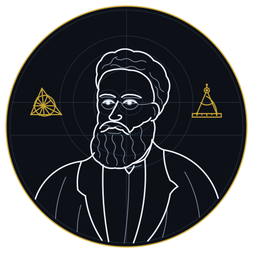

Émile Lemoine¶

Émile Lemoine (1840–1912)—co-discoverer of the symmedian point \(X(6)\) and Lemoine circle—asked a disarmingly practical question: how many times do you actually set your straightedge and compass in a geometric proof? In La Géométrographie, he reduced every ruler-and-compass construction to five elementary operations (\(R_1, R_2, C_1, C_2, C_3\)), turning simplicity and exactitude into a measurable calculus.
Books in This Collection¶
AFAS Pau 1892 / Paris 1893 & Scientia 1902 · 4 Parts · 25 Atomic Leaves
Geometrography (La Géométrographie, ou Art des constructions géométriques) — Complete four-part critical edition across English · French · Summary · Notes tracks, featuring 11 paired archival plates, 11 calibrated interactive SVGs, and Lemoine’s canonical operation benchmarks from elementary lines to the symmedian point.
Key Features¶
Five Elementary Operations (\(R_1, R_2, C_1, C_2, C_3\))
Score every construction by its exact simplicity \(S\) and exactitude \(E\), exposing hidden efficiencies—from Gaston Tarry’s \(S = 9\) parallels to a single-line Golden Section.
11 Paired Plates & Calibrated SVGs
Inspect every 1893 Gauthier-Villars engraved diagram beside its 5-layer theme-adaptive vector reconstruction and 9 additional modern triangle-geometry figures.
Automated Operation-Count Validation
The geometor.lemoine Python package validates operation counts, SHA-256 witness integrity, and cross-corpus benchmarks against Mascheroni and Poncelet–Steiner.
Reference & Project¶
Scholarly Apparatus
People — Profiles of Émile Lemoine, Henri Brocard, Gaston Tarry, Lorenzo Mascheroni, and Jakob Steiner
Bibliography — 1892 Pau, 1893 Paris, and 1902 Scientia witnesses
Concordance & Glossary — Simplicity benchmarks and operational lexicon
About This Project
About — Editorial methodology, operation calculus, and provenance
Using This Edition — Track switching, folio links, and navigation guide
Log & Modules — Development journal and Python API reference